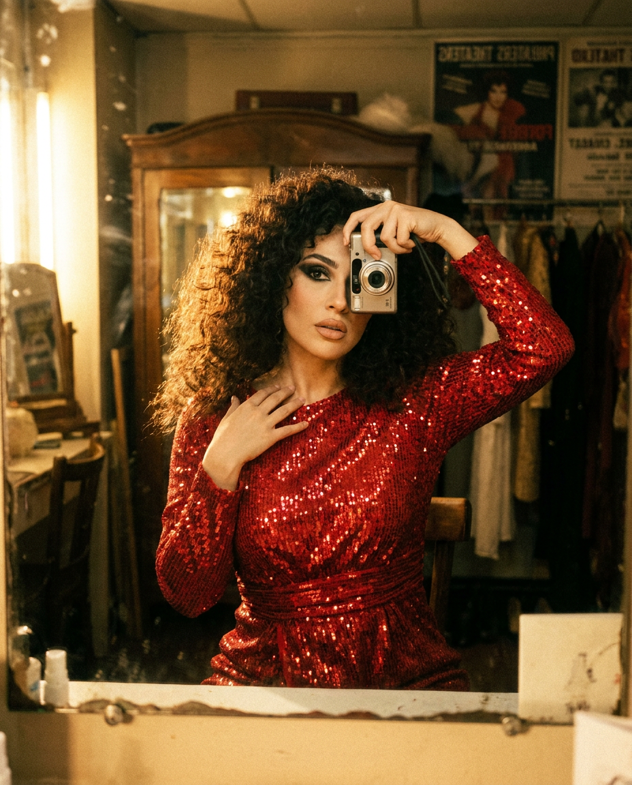
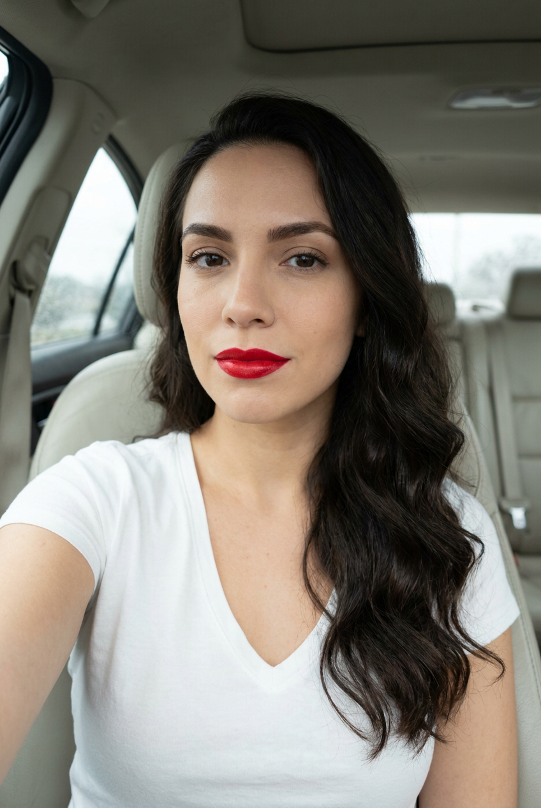
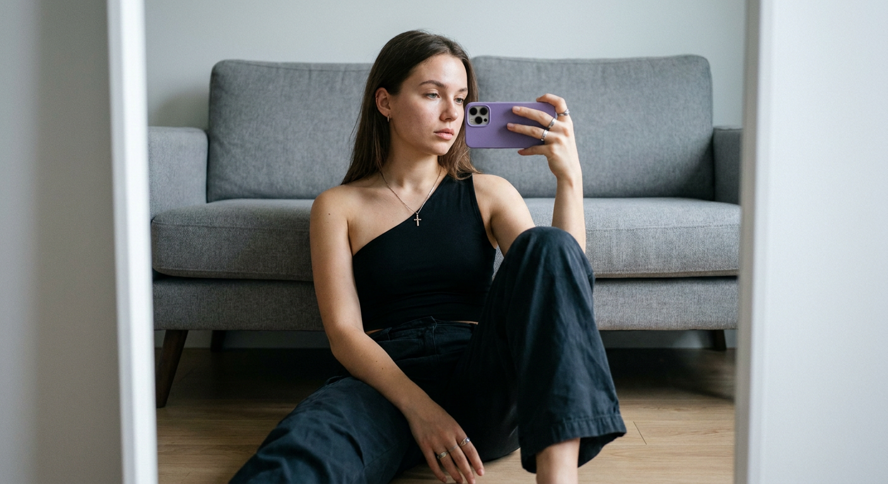
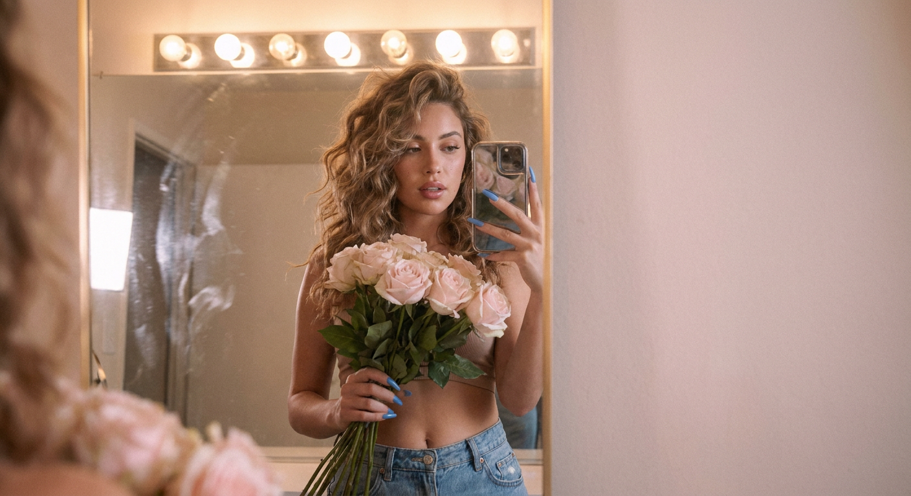
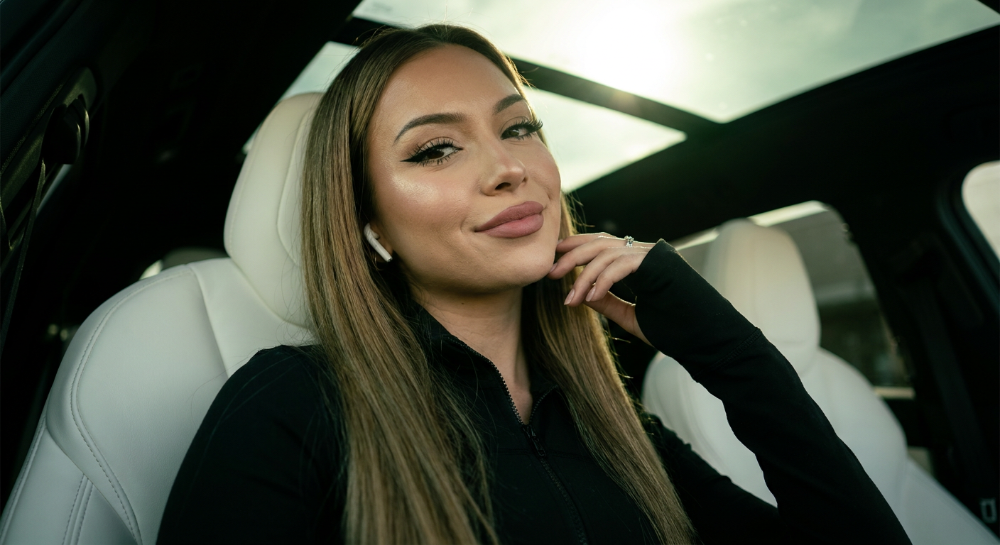
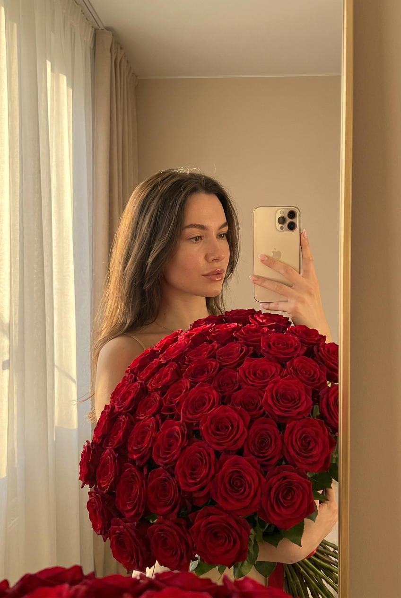
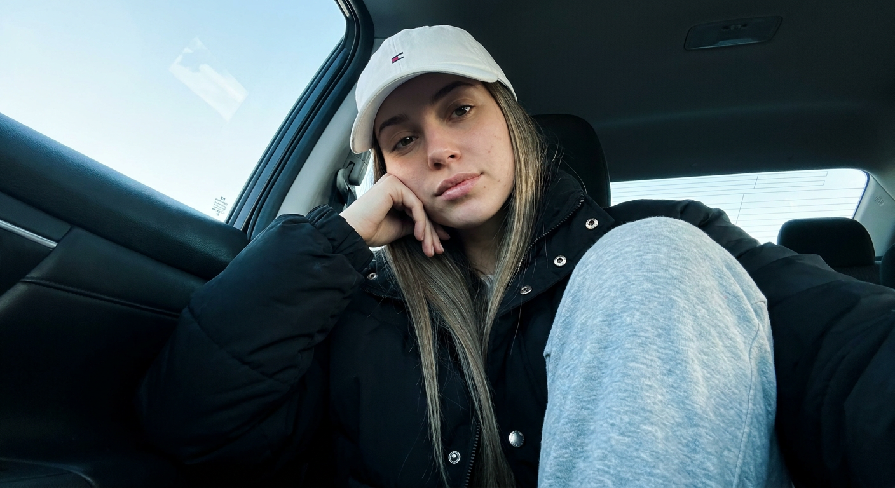
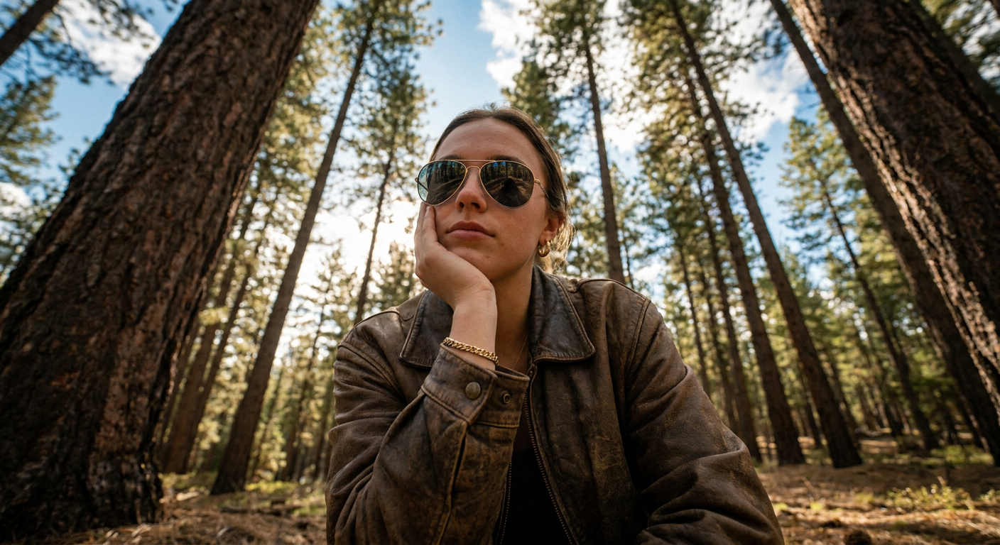
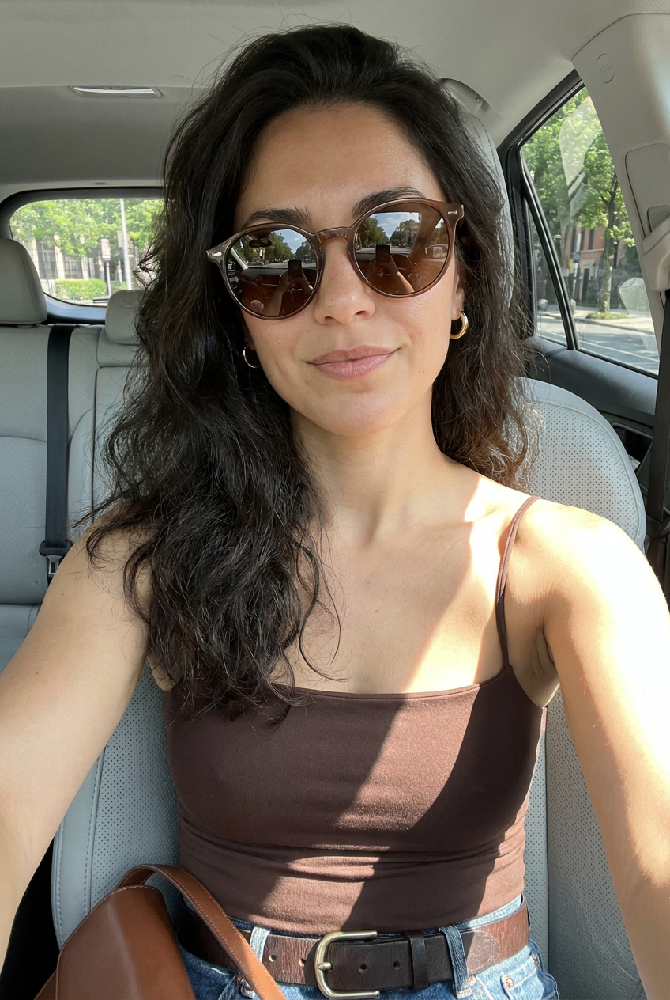
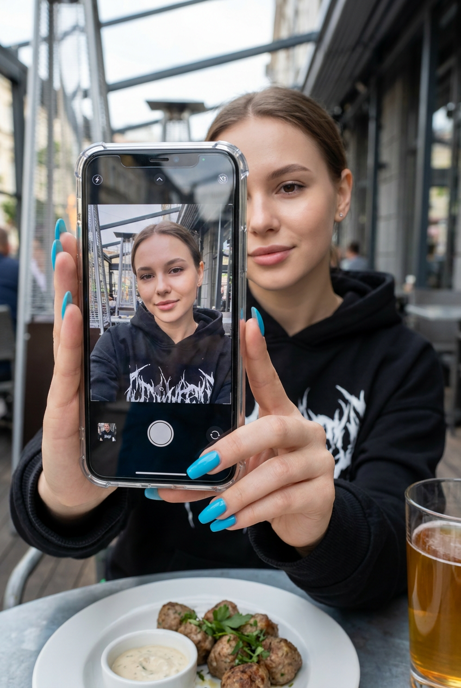

ИИ-фото селфи: 10 промптов для нейросети

Обычное селфи часто выглядит слишком плоско: неудачный свет, случайный фон и поза, которая не передаёт настроение. Генерация помогает собрать кадр заново — с нужной локацией, одеждой, композицией и атмосферой.
В подборке — 10 сценариев для ИИ-фото селфи: от винтажного зеркального портрета и снимка в машине до лесного кадра, fashion-селфи с очками и необычной сцены с телефоном внутри телефона.
Как сгенерировать такое фото: пошагово
Нужен снимок анфас при ровном свете, лицо в кадре целиком, без тёмных очков и головных уборов. Разрешение от 1000 пикселей по короткой стороне. Чем чётче исходник, тем точнее модель повторит черты.
Выберите сценарий ниже и нажмите «Копировать» — текст уйдёт в буфер целиком, вместе с командой сохранения внешности. Эта команда стоит первой строкой и отвечает за то, чтобы на выходе было ваше лицо, а не случайное.
Кнопка «Сгенерировать» рядом с каждым промптом открывает модель в новой вкладке. Nano Banana Pro работает с референсом лица — в отличие от моделей, которые генерируют портрет с нуля и узнаваемость теряют.
Промпт — в поле ввода, портрет — через загрузку референса. Порядок значения не имеет, но без референса команда сохранения внешности работать не будет: модели нечего сохранять.
Для сторис и ленты берите 9:16, для превью и обложек — 4:3. Первый результат редко идеален: если поза или свет ушли не туда, поправьте соответствующую часть промпта и запустите заново. Обычно хватает двух-трёх итераций.
10 промптов для генерации
1. Винтажное селфи за кулисами
Строго сохранить внешность по загруженному референсу: черты лица, пропорции, мимику и текстуру кожи без изменений. Интимный автопортрет у старинного зеркала в полутёмной гримёрке за кулисами. Девушка держит компактную камеру одной рукой возле лица, а второй непринуждённо касается ключицы. Съёмка на уровне глаз, с лёгким диагональным наклоном, вертикальный кадр 4:5 от головы до бёдер. Пространство напоминает костюмерную: мягкие отражения в зеркале, приглушённые блики и детали интерьера. Тёплый рассеянный свет падает сбоку и немного сверху, выделяя волосы сильным контровым ободком. Добавить заметное плёночное зерно и ощущение аналоговой фотографии. Настроение ностальгическое, чувственное, близкое к fashion-редакционной съёмке. Объёмные распущенные волосы, сияющая кожа, выразительный макияж глаз, губы естественного нюдового оттенка, живая женственная энергетика.
2. Красная помада в автомобиле

Строго сохранить внешность по загруженному референсу: черты лица, пропорции, мимику и текстуру кожи без изменений. Фотореалистичный портрет-селфи в салоне автомобиля, вертикальная композиция и крупный план с эффектом фронтальной камеры. Женщина сидит на заднем или пассажирском сиденье, объектив смартфона находится близко к лицу на его уровне и направлен прямо на неё. Голова почти по центру, корпус и лицо слегка повернуты влево, взгляд уверенно встречается с объективом. Выражение спокойное, губы сомкнуты. Кожа ухоженная, с натуральным матовым финишем без пластикового сглаживания. Аккуратные тёмно-коричневые брови, мягкие тени и подводка, подчёркнутые ресницы. На губах насыщенная красная помада с ровным контуром и кремово-сатиновым блеском. Волосы уложены мягкими волнами, имеют объём у корней, часть прядей лежит на груди и плечах; пробор центральный или слегка смещённый. Сохранить живую текстуру волос и дневные блики.
3. Зеркальный кадр на полу

Строго сохранить внешность по загруженному референсу: черты лица, пропорции, мимику и текстуру кожи без изменений. Реалистичный зеркальный портрет молодой женщины с волнистыми волосами, сидящей на светлом деревянном полу перед серым диваном. Она фотографирует себя фиолетовым смартфоном. На девушке чёрный асимметричный топ с открытым одним плечом и тёмные свободные брюки. Дополнить образ тонкой цепочкой с крестиком и несколькими кольцами. Использовать низкий ракурс, чтобы в кадре ощущалась близость к полу и лёгкая динамика. Свет мягкий, естественный, боковой, с нейтральной прохладной цветовой гаммой. Показать натуральную детализацию кожи, ткани одежды, дерева и дивана, без чрезмерной ретуши. Фон слегка размыть мягким боке. Фотографическая эстетика 35 mm, объектив 35 мм, f/1.8, ISO 100. Фокус на лице и смартфоне, естественные пропорции, высокая реалистичность и аккуратная глубина резкости.
4. Розы и свет гримёрки

Строго сохранить внешность по загруженному референсу: черты лица, пропорции, мимику и текстуру кожи без изменений. Крупный зеркальный селфи-портрет молодой женщины с букетом бледно-розовых роз. Атмосфера романтичная и интимная, поверхность зеркала имеет лёгкие разводы и небольшие несовершенства. Сверху мягко светят тёплые лампы гримёрки, создавая нежное золотистое свечение и неглубокие тени. У девушки натуральный макияж, слегка приоткрытые губы и волнистые объёмные волосы. Голубые длинные ногти заметны рядом с букетом и телефоном. Смартфон с отражающим чехлом частично закрывает лицо. В одежде — джинсы и верх, открывающий небольшой участок живота. Использовать пастельную палитру, малую глубину резкости, кинематографичную тональную градацию и мягкое плёночное зерно. Детально передать естественную кожу, лепестки роз, блики на чехле и отражения в зеркале. Кадр должен выглядеть как реалистичная fashion-фотография высокого разрешения.
5. Контрастное селфи под люком

Строго сохранить внешность по загруженному референсу: черты лица, пропорции, мимику и текстуру кожи без изменений. Девушка сидит в автомобиле на белом сиденье, над ней панорамный люк, а задняя часть салона уходит в тёмный фон. Лицо и цвет волос не менять. Рука вытянута в сторону камеры, ладонь находится возле лица; съёмка выполнена с лёгкого нижнего ракурса. Улыбка закрытая, без демонстрации зубов. На девушке чёрный лонгслив на молнии и беспроводные наушники AirPods. Волосы длинные, прямые, доходят до талии. Макияж выразительный: стрелки, ресницы в стиле manga lashes, хайлайтер и губы пыльно-розового оттенка. Солнечный свет проходит через люк и окна, создавая moody-настроение и высокий контраст. Сымитировать съёмку на Phase One IQ4 с объективом 80 мм, диафрагмой f/2.8–f/4 и записью в RAW. Баланс белого смешанный, сохранить тёплые и зеленоватые оттенки. Не допускать плоского света, пересветов, провалов в тенях, потери текстуры кожи, пластикового эффекта, перспективных искажений, лишних предметов, глянцевой ретуши и холодной стерильности.
6. Букет алых роз у зеркала

Строго сохранить внешность по загруженному референсу: черты лица, пропорции, мимику и текстуру кожи без изменений. Реалистичный вертикальный портрет в зеркале: молодая женщина с прямыми волосами и аккуратным макияжем держит огромный букет насыщенно-красных роз. В другой руке — золотой смартфон, его корпус и отражение хорошо видны в зеркальной поверхности. Мягкий тёплый комнатный свет формирует деликатные тени и золотистые блики на волосах, коже и телефоне. Фон нейтральный бежевый, слева заметны светлые занавески. Построить кинематографичную композицию с малой глубиной резкости, чтобы лицо, букет и телефон оставались главным акцентом, а фон мягко растворялся. Использовать глубокую цветовую палитру с насыщенным красным и золотым, но сохранить естественный оттенок кожи. Передать фактуру лепестков, волос, ткани и лёгкий блеск губ. Ретушь мягкая и незаметная, без эффекта фарфоровой кожи; кадр должен выглядеть как профессиональная фотография, снятая в уютной комнате.
7. Casual-селфи в тёмном салоне

Строго сохранить внешность по загруженному референсу: черты лица, пропорции, мимику и текстуру кожи без изменений. Ультрареалистичное lifestyle-селфи стильной молодой девушки в современном автомобиле. Она сидит расслабленно: одно колено слегка поднято к камере, лицо поддерживается рукой. Длинные прямые волосы спускаются на плечи. На голове белая бейсболка с минималистичным логотипом, на девушке объёмный чёрный жакет с металлическими пуговицами и мягкие серые спортивные брюки. Дневной свет проникает через боковое окно и мягко освещает лицо, тогда как тёмный салон контрастирует с ярким небом снаружи. На стекле оставить лёгкие естественные отражения. Макияж спокойный и натуральный: выразительные брови, глянцевые губы. Внутри автомобиля — холодноватая кинематографичная тональность, лицо в фокусе, задний план постепенно уходит в темноту. Композиция напоминает снимок на телефон с лёгкого нижнего угла, с естественной неидеальной обрезкой кадра, живой текстурой кожи, настоящими тенями и бликами, малой глубиной резкости.
8. Лесной портрет снизу

Строго сохранить внешность по загруженному референсу: черты лица, пропорции, мимику и текстуру кожи без изменений. Реалистичный фотографический портрет молодой женщины в лесу, снятый снизу вверх широкоугольным объективом. Девушка сидит и подпирает щёку рукой, её лицо частично скрывают зеркальные солнцезащитные очки. На ней коричневая кожаная куртка, золотые серьги и золотой браслет. Вокруг высокие сосны, над ними голубое небо с лёгкими облаками; солнечный свет просачивается сквозь кроны. Совместить мягкое естественное контровое освещение с боковым, чтобы по волосам, очкам и плечам появились деликатные световые контуры. Передать фактуру кожи, прядей волос, кожи куртки, металла украшений и сосновой коры. Использовать малую глубину резкости, слегка тёплую цветокоррекцию и высокий динамический диапазон. Композиция широкоугольная, кинематографичная и атмосферная, но без чрезмерной стилизации. Сохранить фотографическую резкость на лице и естественные пропорции при низком ракурсе.
9. Очки и шоколадный топ

Строго сохранить внешность по загруженному референсу: черты лица, пропорции, мимику и текстуру кожи без изменений. Фотореалистичное fashion-селфи в салоне автомобиля, вертикальный кадр со стороны салона. Женщина сидит на водительском или пассажирском месте, корпус развёрнут к камере, она слегка наклоняется вперёд и смотрит прямо в объектив. Лицо частично закрывают крупные коричнево-бронзовые солнцезащитные очки в тонкой оправе; в линзах должны отражаться улица и небо. Выражение расслабленное и уверенное, губы слегка приоткрыты или складываются в едва заметную ухмылку. Волосы объёмные, мягко волнистые, уложены естественно: часть лежит на плечах, часть уходит за спину. Добавить небольшие золотисто-бронзовые серьги-кольца. Одежда — облегающий тёмно-коричневый топ на тонких бретелях с гладкой тканью и солнечными бликами. В нижней части кадра показать талию, тёмно-коричневый кожаный ремень с массивной металлической пряжкой и фрагмент джинсов или брюк. Сохранить реалистичную текстуру материалов, естественный свет из окон и ощущение дорогого автомобильного fashion-кадра.
10. Телефон внутри телефона

Строго сохранить внешность по загруженному референсу: черты лица, пропорции, мимику и текстуру кожи без изменений. Фотореалистичное street/cafe-селфи в вертикальной композиции. На переднем плане крупно показать две вытянутые руки, которые держат смартфон перед камерой. Телефон находится в прозрачном защитном чехле с заметными отражениями. На его экране виден зеркальный кадр из режима фронтальной камеры: та же девушка в чёрном худи стоит или сидит в уличном кафе, слегка улыбается или закрывает глаза, поза расслабленная. Интерфейс на дисплее нейтральный, без читаемых брендов, логотипов и текста; допускаются простые иконки и ощущение живого предпросмотра. За экраном, в реальности и внутри отражённого изображения — молодая женщина с волосами до плеч, пробором около центра и естественными прядями, обрамляющими лицо. Макияж лёгкий: ровный тон кожи, подчёркнутые брови, аккуратные ресницы. Мимика спокойная, без напряжения. На ней чёрное oversize-худи или объёмный свитшот с крупным белым принтом. Согласовать перспективу, пальцы, отражения стекла и совпадение лица в двух планах.
Что важно учесть в этом стиле
Селфи держится на правдоподобной перспективе: камера должна быть близко к лицу, а рука, телефон, зеркало или очки — логично расположены относительно объектива. Если в сцене есть отражение, отдельно описывайте, что именно попадает в зеркало или на экран.
Для реалистичного результата задавайте не только одежду, но и качество света: его направление, жёсткость, цвет и поведение на коже. Формулировки вроде «естественная текстура» лучше подкреплять конкретикой — видимые поры, фактура ткани, блики на волосах, отражения на стекле.
Идеи для вариаций
- Замените автомобиль на такси, электрокар или старый кабриолет, сохранив тот же ракурс.
- Поменяйте букет роз на пионы, сухоцветы или ветки эвкалипта.
- Добавьте дождь на окнах, вечерние вывески или свет от приборной панели.
- Для лесного кадра используйте туман, осенние листья или тёплый свет заката.
- Сделайте зеркальный снимок в лифте, примерочной или ванной с крупной плиткой.
- Вместо чёрного худи задайте кожаную куртку, светлый свитер или спортивную форму.
Как собрать свой промпт
Начните с типа кадра и композиции: селфи с фронтальной камеры, зеркальный портрет, крупный план или съёмка с нижнего ракурса. Затем укажите позу, направление взгляда и предмет, который находится ближе всего к объективу. После этого опишите внешность, одежду, аксессуары и фон.
Отдельным блоком задайте свет и настроение, а в конце добавьте технику: вертикальное соотношение сторон, фокусное расстояние, диафрагму, глубину резкости и характер ретуши. Для сложных сцен с зеркалом или экраном полезно прямо написать, какие детали должны совпадать, а какие — оставаться в отражении.
Ошибки, из-за которых кадр не получается
- Слишком общий свет. Фраза «красивое освещение» не объясняет нейросети, откуда идут лучи и какие тени нужны.
- Несовместимые ракурсы. Низкая точка съёмки, крупный план и длиннофокусный объектив могут конфликтовать, если не уточнить композицию.
- Сложные отражения без пояснений. Для зеркала и экрана описывайте отдельно реальную сцену, отражение и положение телефона.
- Перегруженная одежда. Длинный список деталей повышает риск случайных цветов, лишних украшений и странных логотипов.
- Отсутствие ограничений. Добавляйте запреты на пластиковую кожу, лишние пальцы, искажённые руки, нечитаемый текст и неестественные тени.
- Попытка получить результат с первого раза. Для сложного селфи закладывайте 3–6 генераций и меняйте за один подход только один параметр.
Частые вопросы
Как сделать такое ИИ-фото бесплатно?
Попробовать можно в Kandinsky и Шедевруме — обычно они подходят для текстовой генерации и простых вариаций, но точное сохранение лица, рук и сложных отражений может быть нестабильным. В Krea AI и Arena.ai доступны инструменты для работы с референсом, однако набор функций и ограничения меняются. Бесплатные режимы часто дают меньше попыток, более низкое разрешение или не поддерживают полноценное редактирование по изображению. Для селфи с узнаваемой внешностью заранее проверьте правила загрузки референсов и не используйте чужие фотографии без разрешения.
Как сохранить лицо на ИИ-селфи?
Используйте один качественный референс с хорошо освещённым лицом, а в промпте не перегружайте описание внешности противоречащими деталями. Лучше отдельно задавать позу, одежду и свет. Если сервис поддерживает силу влияния изображения, начинайте со среднего значения: слишком слабое изменит лицо, слишком сильное может перенести фон и выражение с исходного снимка.
Почему нейросеть искажает руки и телефон?
Руки, пальцы, зеркала и экраны требуют согласованной перспективы, поэтому они часто ломаются в сложных сценах. Уточните число рук, положение пальцев, то, какая рука держит телефон, и что именно отражается на дисплее. Сделайте несколько вариантов, затем исправьте проблемную область локальной перерисовкой, если такая функция доступна.
Как получить реалистичную кожу без эффекта пластика?
Добавьте в промпт естественную текстуру кожи, мягкую ретушь, видимые, но аккуратные детали и запрет на beauty-сглаживание. Не сочетайте слова «идеальная кожа», «глянцевый портрет» и «безупречная ретушь»: они часто приводят к восковому лицу. Также помогает описание реального источника света и умеренной глубины резкости.